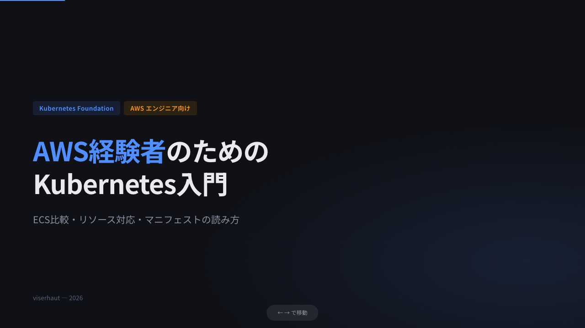
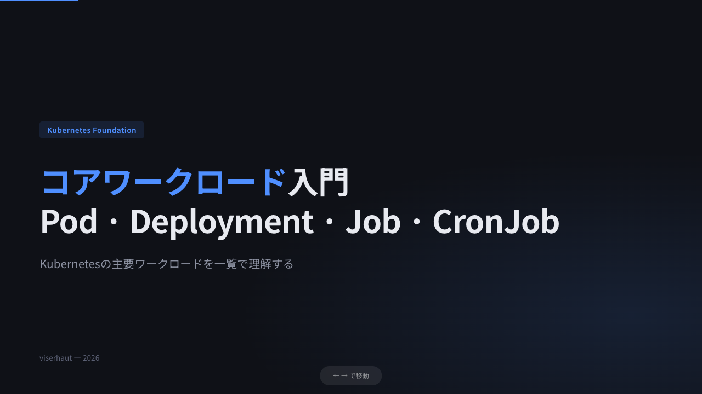
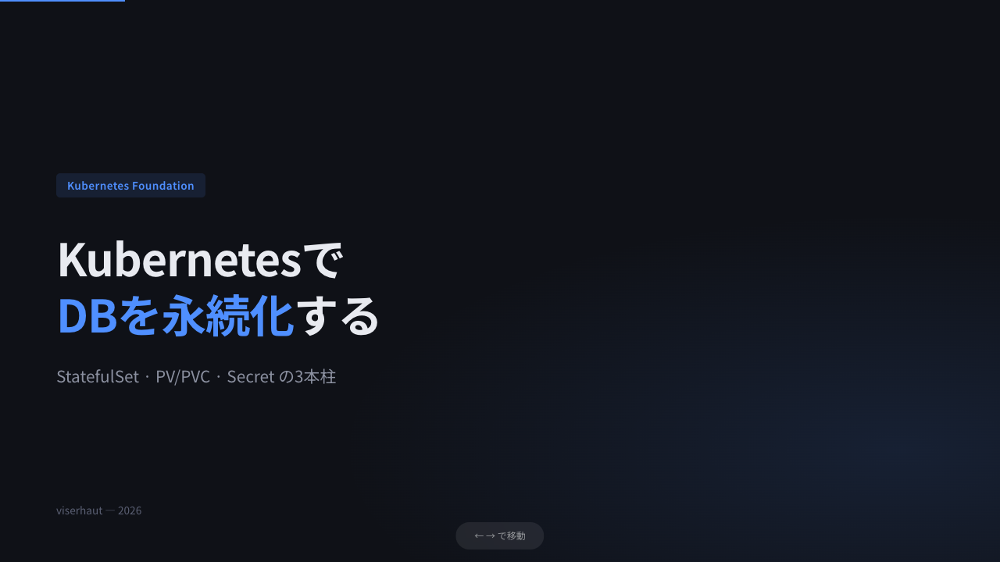
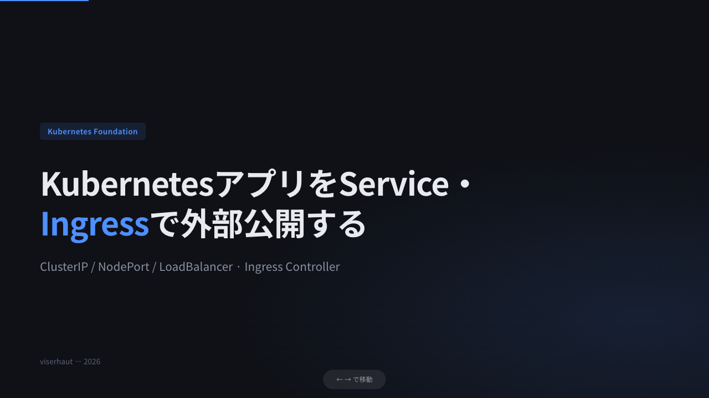
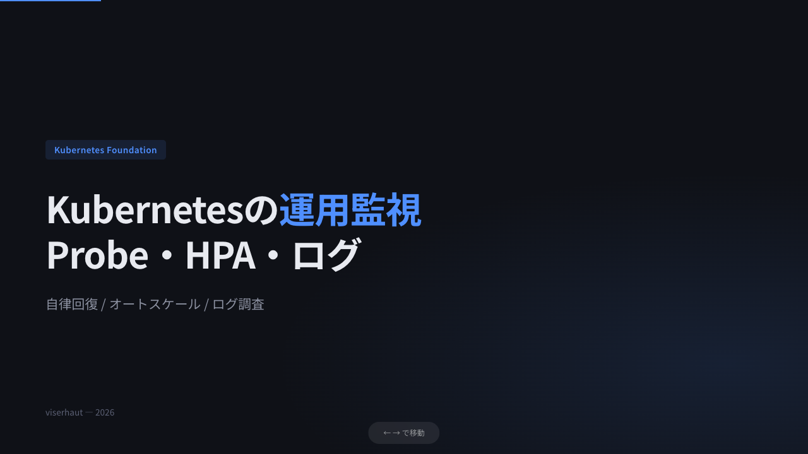

コース一覧
/ Kubernetes Foundation
Kubernetes Foundation
スライド一覧 — PDFボタンでスマホ確認

AWS経験者のためのKubernetes入門
intro
PDF
HTML

コアワークロード入門
Pod / Deployment / Job / CronJob
PDF
HTML

KubernetesでDBを永続化する
StatefulSet / PV・PVC / Secret
PDF
HTML

ServiceとIngressで外部公開する
ClusterIP / NodePort / Ingress
PDF
HTML

運用監視 — Probe・HPA・ログ
Probe / requests·limits / HPA / stern
PDF
HTML